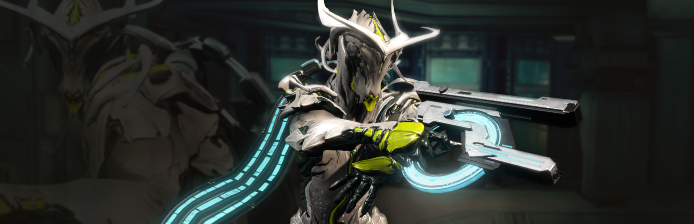
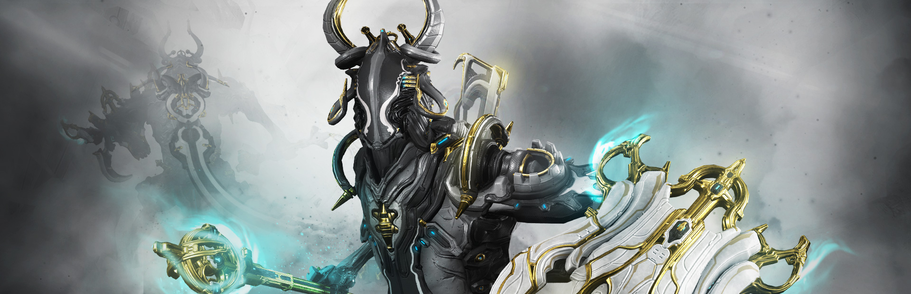
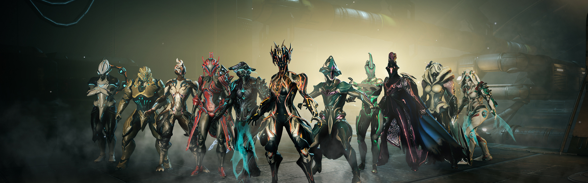

❮
❯
Lotus
Voce nao está sozinho tennoPrologo
Warframe começa com os Orokins, seres humanos que alcançaram o máximo da tecnologia genética e com isso se tornaram perfeitos, com expectativa de vida de centenas de anos, capazes de usar engenharia genética e clonagem para criar animais perfeitos para certos tipos de tarefas e também pessoas. Porém os Orokins eram extremamente elitistas, cultuavam a perfeição e desprezavam as classes menores. Tinham pele branca igual neve, olhos dourados ou azuis e eram perfeitamente belos e simétricos. As roupas possuíam detalhes em ouro.
warframe___ghost_of_the_orokin_by_yuikam
Existiam muitas outras "classes" que formavam o Império Orokin.
Arquimedians: Eram os cientistas do Império Orokin, todos viviam em comunidades formadas por Corpus (Famílias), e eram constantemente ameaçados pelos Orokins para se manterem na linha. Se um cientista falhasse em sua meta, toda os Corpus deles eram mortos como uma forma de punição.
Grineer: Clones criados para serem escravos mineradores, geneticamente modificados para se sentirem felizes trabalhando até morrerem de exaustão, sem nenhum tipo de inteligência ou vontade própria.
Mesmo assim nem tudo era perfeito no Império Orokin, como qualquer civilização que consiga se auto sustentar por milhões ou bilhões de anos, os Orokins conseguiram colonizar todos os planetas e esgotar maioria dos recursos do Sistema Origin ( o nosso sistema solar) chegando a uma crise quer poderia se tornar irreversível. Como uma saída, o Projeto Crewman foi criado, como uma alternativa para esse problema. Isso consistia em viajar para um novo sistema solar, no caso o sistema Tau, usando um tipo de propulsão mais rápida que a luz e terraformar o sistema para suportar vida. Um dos cientistas Arquimidian criou uma forma de vida, capaz de se adaptar a ferimentos e se fortalecer e evoluir conforme as dificuldades.
Essa forma de vida seria usada como tripulação na viagem para Tau, eles viajariam usando propulsão comum durante milhares de anos, construindo Solar Rails até Tau, onde eles terraformariam o sistema para a chegada dos Orokins. Porém essa forma de vida possuía uma falha genética criada pelos próprios Orokins. O Solar Rail criava uma brecha por uma outra dimensão chamada Void, assim permitindo que a nave atravessasse grandes distancias em pouco tempo. A energia criada pelo Void era mortal para essas formas de vida, tornando a viagem apenas de ida. O que os Orokins não esperavam é que essas formas de vida evoluiriam absurdamente rápido, se tornando extremamente inteligentes e alcançando o nível de tecnologia Orokin em pouquíssimo tempo. No caso essas formas de vidas passaram a ser chamadas de SENTIENTS, e decidiram voltar para o Sistema Origin para entrar em guerra com os Orokins. Essa guerra é chamada no jogo de Old War ou Great War.
A guerra
Durante a Old War, os Sentients haviam evoluído absurdamente a ponto de serem capazes de usar os Solar Rails sem serem mortos, Isso permitiu que os Sentients começassem uma invasão em larga escala ao Sistema Origin. Os Orokins mesmo com sua tecnologia extremamente avançada, estavam sendo massacrados pois os Sentients conseguiam usar a tecnologia contra eles. Quanto mais os Orokins evoluíam suas armas, mais poderosos os Sentients ficavam. Em desespero, os Orokins decidiram usar armas biológicas e criaram o vírus conhecido como Tecnocyte, um vírus que infectava seres vivos e os transformava em seres feitos de pedaços de corpos, carne retorcida e nano células. Isso não deu em nada certo, os Infestados atacavam e infectavam tudo que estava vivo, menos os Sentients, já que eles não eram orgânicos.
Como um ultimo ato de desespero, sabendo que o Void ainda era um veneno para os Sentients, os Orokins enviaram uma nave chamada Zariman 10-0 para dentro do Void, com uma tripulação de crianças. Durante anos a nave ficou a deriva no Void até ser recuperada. As crianças daquela nave sofreram mutações, possuíam poderes absurdos e eram capazes de matar pessoas facilmente pois não podiam controlar seus poderes.
Os Orokins então criam os Warframes, através do Warframe, a energia void das crianças pode ser focada em forma de poderes, como uma lente. Essas crianças passam a ser tratadas como apenas armas, são treinadas em todo tipo de tática de batalha, todas as artes marciais, aprendem a atirar com qualquer arma e sobreviver a qualquer guerra. O Tenno é criado.
Isso acaba se tornando uma reviravolta na Guerra. Usando armas sem tecnologia avançada como armas balísticas e lâminas, e atacando usando poderes do void, os Tenno começam a derrotar os Sentients e retomar o terreno perdido durante a guerra. Como ultimo recurso, Hunhow, um dos Sentients, envia sua própria filha Natah para o sistema Origin. A missão é matar os Orokins, os Tenno e abrir caminho para a invasão final. Natah acaba entrando em contato com os Tenno e ganhando sua confiança. Durante um esforço final os Sentients são derrotados e a guerra termina. Os Tenno são chamados em Terminus para uma cerimônia de vitória. Mesmo assim os Tenno ainda eram visto como animais, seres desfigurados e demônios do Void.
Durante a cerimônia, os Tenno matam todos os Imperadores Orokins e vários outros Orokins de alta patente ( Executors, Sectarus e etc), jogando o Império Orokin no caos, com o vírus Tecnocyte se espalhando em outros planetas, o Império Orokin é destruído, os Grineer se rebelam, roubam naves e sequestram alguns Orokins sobreviventes para criarem seu próprio império em nome das Rainhas. No jogo, é chamado de O COLAPSO. Com os Orokins fora do caminho, Natah deveria matar os Tenno assim completando o ciclo e permitindo a tomada Sentient. Porém durante a viagem para o Sistema Origin, por causa da energia Void, Natah se torna estéril e vê nos Tenno, crianças necessitando de uma mãe. Ignorando a missão dada à ela, Natah abandona seu nome e se torna LOTUS, ela não acorda os Sentients (que haviam forjado a própria destruição no fim da guerra) e coloca os Tenno em cryostasys no Void, onde ficariam fora do alcance dos Sentients. Com a queda do Império, várias facções se formaram.
Corpus:
os Arquimidians que sobreviveram a queda do Império criam pequenas comunidades e passam a viver de venda de sucata Orokin perdida durante a Guerra, com o tempo, essas comunidades se juntam, passam a recuperar um pouco da tecnologia perdida e se tornam um grande conglomerado de comunidades formando o que parece um culto mercante, chamado de Corpus. Focando em tecnologia robótica e energética.
Grineer:
usando muito dos reféns pegos durante a queda do Império, os Grineer se especializam em tecnologia genética, porem sem grande parte da tecnologia de ponta Orokin que se perdeu durante a guerra, os Grineer passam a se clonar incessantemente, mas a cada geração, mais o DNA fica degradado, gerando grandes deformidades, o que força os Grineer a seguirem a tecnologia de próteses, transformando muitos Grineers em seres mais máquina que homem. Numa corrida contra o tempo, os Grineer acreditam que os Tenno poderiam possuir a chave para curar essa degradação do DNA. Assim o Império Grineer se forma, entra em guerra com os Corpus e decide, através de número massivo de tropas, dominar todo o sistema Origin.
Tenno:
Centenas ou milhares de anos depois da queda, Vor, um dos grandes líderes dos Grineer, passa a invadir o Void a procura dos Tenno, Lotus, então os acorda, pedindo aos Tenno que lute pelo equilíbrio do Sistema Origin para evitar que o domínio Grineer prevaleça.
as quests (em ordem cronologica)
Em ordem cronológica.
Recompensa de Vor:
Obedecendo as Rainhas, Vor e suas tropas Grineer vasculham o Void a procura dos Tenno, na esperança de captura-los antes que antes que a Lotus os contate. Falhando em seu objetivo, Vor é dado como morto. É descoberto depois que sua chave Void, Janus, o trouxe de volta a vida, em forma de energia, como um guardião do Void com a mente corrompida.
Uma Vez Acordado:
Os Tenno recebem uma missão da Lotus, para atacar uma base de pesquisa Grineer que pode estar criando uma nova super arma. Ao chegar na base, os Tenno descobrem que a base é um laboratório biológico de Tengus, um cientista Grineer que procura usar o vírus Tecnocyte para criar armas. Mas por descuido, o vírus é liberado, se espalhando pela primeira vez desde a Velha Guerra, no sistema Origin. Os Tenno então detonam uma bomba de cascata para destruir a base, os infestados e a pesquisa de Tengus.
Archwing:
Lotus entrega aos Tenno o protótipo da Archwing Odonata, e pede para que seja encontrada as partes, dizendo que com as Archwings, os Tenno poderão lutar em outro nível com as maiores ameaças Grineer.
Sonhos Roubados:
O líder da pesquisa genética Grineer Tyl Regor contrata a ladra Maroo para ir a uma nave Orokin perdida e conseguir o Codex Arcano, por odiar os Grineer, Maroo entrega um codex falso e vende o verdadeiro para os Corpus, agora caçada pelos Grineer, Maroo contata a Lotus e pede proteção em troca de informação sobre uma máquina arcana na nave Orokin perdida, depois de infiltrar a nave, os Tenno ativam a máquina, que mostra uma mensagem sem sentido, que depois seria revelada como o primeiro indício Sentient depois da Velha Guerra.
Mensagens Ocultas:
Após identificar um sinal desconhecido no espaço, os Tenno procuram decodificadores Orokins em naves abandonadas para decodificar o sinal. O que revela ser uma mensagem, em forma de charada, que levaria a locais onde estariam as partes do warframe perdido Mirage.
Teorema Limbo:
Os Tenno descobrem um antigo Teorema incompleto, mesmo sem fazer sentido, com o tempo o teorema levaria os Tenno a seguirem os passos do Tenno que um dia ocupou o warframe Limbo.Personagens
Em ordem cronológica.
Recompensa de Vor:
Obedecendo as Rainhas, Vor e suas tropas Grineer vasculham o Void a procura dos Tenno, na esperança de captura-los antes que antes que a Lotus os contate. Falhando em seu objetivo, Vor é dado como morto. É descoberto depois que sua chave Void, Janus, o trouxe de volta a vida, em forma de energia, como um guardião do Void com a mente corrompida.
Uma Vez Acordado:
Os Tenno recebem uma missão da Lotus, para atacar uma base de pesquisa Grineer que pode estar criando uma nova super arma. Ao chegar na base, os Tenno descobrem que a base é um laboratório biológico de Tengus, um cientista Grineer que procura usar o vírus Tecnocyte para criar armas. Mas por descuido, o vírus é liberado, se espalhando pela primeira vez desde a Velha Guerra, no sistema Origin. Os Tenno então detonam uma bomba de cascata para destruir a base, os infestados e a pesquisa de Tengus.
Archwing:
Lotus entrega aos Tenno o protótipo da Archwing Odonata, e pede para que seja encontrada as partes, dizendo que com as Archwings, os Tenno poderão lutar em outro nível com as maiores ameaças Grineer.
Sonhos Roubados:
O líder da pesquisa genética Grineer Tyl Regor contrata a ladra Maroo para ir a uma nave Orokin perdida e conseguir o Codex Arcano, por odiar os Grineer, Maroo entrega um codex falso e vende o verdadeiro para os Corpus, agora caçada pelos Grineer, Maroo contata a Lotus e pede proteção em troca de informação sobre uma máquina arcana na nave Orokin perdida, depois de infiltrar a nave, os Tenno ativam a máquina, que mostra uma mensagem sem sentido, que depois seria revelada como o primeiro indício Sentient depois da Velha Guerra.
Mensagens Ocultas:
Após identificar um sinal desconhecido no espaço, os Tenno procuram decodificadores Orokins em naves abandonadas para decodificar o sinal. O que revela ser uma mensagem, em forma de charada, que levaria a locais onde estariam as partes do warframe perdido Mirage.
Teorema Limbo:
Os Tenno descobrem um antigo Teorema incompleto, mesmo sem fazer sentido, com o tempo o teorema levaria os Tenno a seguirem os passos do Tenno que um dia ocupou o warframe Limbo.Stalker
Talvez o maior mistério depois de Second Dream, o Stalker possui muito de sua história ainda não contada, o que acaba transformando muitas coisas em especulação. Sabe-se que o Stalker é ou era um Tenno durante a Velha Guerra, enquanto os Tenno seguiram para o lado da Lotus, Stalker era completamente leal aos Orokins, mesmo sendo tratado mal como todos os outros Tenno. Durante a guerra, Stalker era apenas um guardião baixo, possivelmente uma das menores patentes Tenno na era Orokin, durante a cerimônia do termino da Velha Guerra, Stalker viu a traição dos Tenno e o assassinato dos Imperadores Orokin.
Com seu modo de vida em ruínas, e o império jogado no caos, Stalker perdeu tudo. Diferente dos outros Tenno, ele nunca foi para a Cryostasis e viu as novas facções se formarem durantes os séculos que passou vagando pelo sistema Origin. Possuindo um ódio imenso pelos Tenno e por ele mesmo, se sente culpado por não ter tido poder para evitar a morte dos Orokins e ao mesmo tempo os culpa pela traição. Quando os Tenno foram acordados, sem lembrança do acontecido na guerra, Stalker passa a caça-los, procurando justiça pelo passado e pelo presente.
Mesmo matando vários Warframes, isso de nada adiantava para reduzir o numero de Tenno que lutavam. O desespero de Stalker era tanto que decide se aliar a Hunhow, inimigo dos próprios Orokins para tentar destruir os Tenno. Sem poder para mata-los, Hunhow usa seus ossos para criar a Pakal Armor e a espada War e entrega para Stalker. Com a armadura, o agora SHADOW STALKER teria o poder dos Sentients, capaz de se adaptar aos danos recebidos, e Hunhow, agora com a ajuda dele poderia alcançar o Void e o Reservatório, o lugar sagrado para os Tenno. O seu Warframe é capaz de usar várias habilidades de outros Warframes, além da sua habilidade unica chamada Dispel, que cancela completamente todas as habilidades ativas de outros Warframes.
Agora com os ACOLYTES, Tenno que segue os seus ensinamentos e forma de justiça deturpada, e aliado a Hunhow, o Stalker se tornou ainda mais perigoso.
eventos
Operação Sling Stone: Lotus recebe a informação que os Grineer planejam um ataque em larga escala contra os Corpus usando a nova classe de naves Fomorian. Mesmo que o ataque contra os Corpus seria de grande ajuda para os Tenno, isso aumentaria o poder do Império Grineer, reduzindo os esforços de guerra Tenno no futuro. É decidido que os Tenno atacariam qualquer Fomorian detectada no sistema, protegendo os Corpus e sabotando as Fomorians por dentro.
Operação Arid Fear:
Depois da derrota das Fomorians, os Tenno descobrem que os Corpus possuem informação da localização de bases Grineer na lua marciana de Phobos. Os Scouts, que guardam essa informação, tendo medo de um ataque iminente dos Tenno fogem para o Void, usando uma nova tecnologia Corpus que permite a criação de chaves Void baseada em tecnologia Corpus. Os Tenno então precisam roubar a tecnologia, recriar as chaves e atacar as naves Corpus escondidas no Void para capturar os Corpus Scouts. (revelando Phobos na navegação)
Gradivus Dilemma:
Informações mostram que um iminente conflito pode acontecer em Gradivus, Marte. As tropas de Sargas Ruk planejam um ataque depois que Alad V descobriu um grupo de capsulas com Tenno em sono criogênico e planeja disseca-los para criação de armas avançadas. Vendo como uma quebra de contato, os Grineer usam isso como desculpa para atacar o território Corpus, arrasar as colônias e escravizar os habitantes. Os Tenno então ficam no meio de um dilema: Ajudar os Grineer a atacar Alad V e escravizar os colonos assim salvando os Tenno capturados ou ajudar Alad V, sacrificando os Tenno capturados e impedindo os Grineer de escravizar as colônias e expandir o Império.
No fim, a maioria dos Tenno se aliaram aos Grineer, sacrificando as colônias para salvar os Tenno capturados, destruindo os projetos de Alad V.
The Hunt for Alad V:
Para impedir o aumento da influência de Alad V no conselho Corpus, Frohd Bek contata os Tenno propondo um acordo mútuo. Os Tenno deveriam limpar a infestação de várias naves Corpus nos arredores de Júpiter, com a ajuda de soldados Corpus, e Frohd Bek entregaria as coordenadas do laboratório de Alad V, onde informações mostravam que ele estava fazendo experimentos em Warframes para criação de robôs mais tecnológicos, principalmente um Warframe capturado de code nome "Valkyr".
Cicero Crisis:
Depois de eras de manipulação genética pelos Orokin, a Terra se tornou uma floresta interminável e desolada, através de uma nova toxina, Vay Hek planeja destruir as florestas super resistentes da Terra para iniciar a re-colonização do planeta. Os Tenno então partem para Terra para impedir o uso das Toxinas e impedir a expansão Grineer.
Tethra Doom:
Mesmo com o fracasso das Fomorians em Sling Stone, Vay Hek decide recriar a frota Fomorian nos estaleiros de Ceres para tentar a dominação total do Sistema Origin, assim que os Tenno descobrem, decidem impedir a criação das novas Fomorian roubando os núcleos e os detonando em locais seguros. Mas antes os Tenno precisam descobrir o local onde os núcleos estão sendo produzidos, decodificando mensagens. Os Tenno falham, descobrindo que os núcleos destruídos eram na verdade núcleos auxiliares, e que os núcleos principais já estavam nas Fomorians, que agora não podiam ser detectadas no sistema.
Operação Breeding Grounds:
Alad V se infecta com o vírus Tecnocyte e planeja infectar colônias e naves inteiras usando colmeias infestadas com a nova evolução do vírus Tecnocyte capaz de infectar organismos robóticos. Ao detectar uma infecção em larga escala de naves Corpus passando em Eris, nos limites do Sistema Origin, os Tenno precisam atacar e destruir as colmeias antes que o vírus Tecnocyte infecte todo o sistema, o que seria em questão de dias.
Operação Cryotic Front:
Uma pessoa misteriosa (Baro Ki'Teer) contata os Tenno, se dizendo um grande seguidor da causa Tenno, diz que a ameaça das novas Balor Fomorians seria demais para os esforços Tenno atuais e entrega a informação de um novo tipo de material chamado Cryotic, que permitiria a criação de novos armamentos que ajudariam na batalha que estaria por vir.
Operação Gate Crash:
Depois de avaliar o Datamass entregue por Baro Ki'Teer, os Tenno agora possuem uma pista para procurar por informações sobre a tecnologia Archwing, e o lugar mais provável onde a informação estaria seria no Void. Porém os Grineer também descobrem sobre a tecnologia e passam a usar o Feixe de Torsão para forçar a abertura dos portais do Void e destruir as informações sobre as Archwings antes dos Tenno conseguirem. Os Tenno então devem entrar no Void, conseguir a informação e atacar o feixe e a base pelo portal, impedindo acesso Grineer aos segredos do Void.
Operação Mutalist Incursions:
Alad V faz um pronunciamento para todo o sistema, declarando guerra contra todas as facções. Usando novos tipos de infestado, ele planeja criar um Império apenas dele, onde apenas a infestação existe. Todas as facções se juntam para ataca-lo diretamente. Ao impedir os ataques dos infestados em todo o sistema, os Tenno então atacam Eris a procura do laboratório de Alad V.
Operação Eyes of Blight:
As Balor Fomorian de Vay Hek reaparecem no sistema, em rota de interceptação direta aos Relays Tenno. Usando as Archwings, os Tenno então precisam destruir as Fomorians antes que cheguem na área designada, já que um único tiro do canhão principal de uma Balor Fomorian pode destruir todo um Relay. Mesmo com os esforços, dos 7 relays Tenno, apenas 3 sobrevivem e os Tenno decidem caçar Vay Hek pelo sistema por justiça, formando assim os esquadrões de julgamento das Raids.
Operação False Profit:
Nef Anyo decide enganar o povo do sistema Origin para arrecadar fundos para seu projeto Bursa. Lotus então envia os Tenno para invadir o sistema das Bursas e falir Nef Anyo roubando todo o dinheiro que ele conseguiu.
Operação Tubemen of Regor:
Em outro dilema, Alad V pede ajuda aos Tenno, dando a informação que nos laboratórios de clonagem de Tyl Regor, pode existir uma cura para a infestação que esta destruindo Alad V. Ao mesmo tempo, Nef Anyo se dispõe a guiar os Tenno até os laboratórios, mas pedindo em troca que a cura seja destruída, assim selando o destino de Alad V a sucumbir pela infestação. No fim, a maioria dos Tenno ajudaram Alad V a conseguir a cura, o que o levou a ajudar os Tenno na Second Dream.
Operação Shadow Debt:
Depois de Second Dream, Alad V cobra o favor e pede ajuda aos Tenno para protege-lo dos Acolytes, seguidores do Stalker. Os Tenno devem ajudar Alad a descobrir o padrão de invisibilidade dos Acolytes, e assim ataca-los antes que eles ataquem Alad, reduzindo seus números para que no fim, durante os Tenno pudessem atacar diretamente Misery enquanto ele tenta mata-lo.